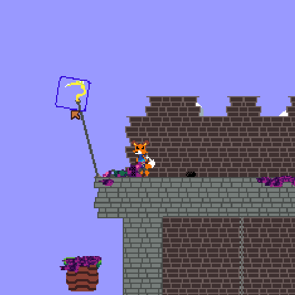
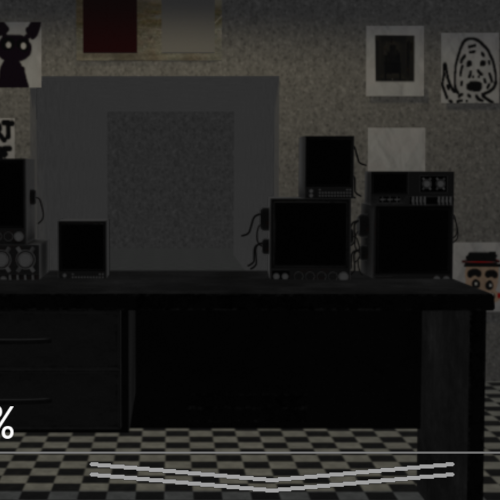
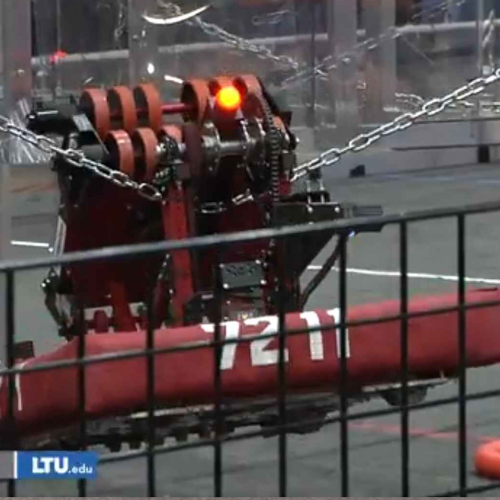
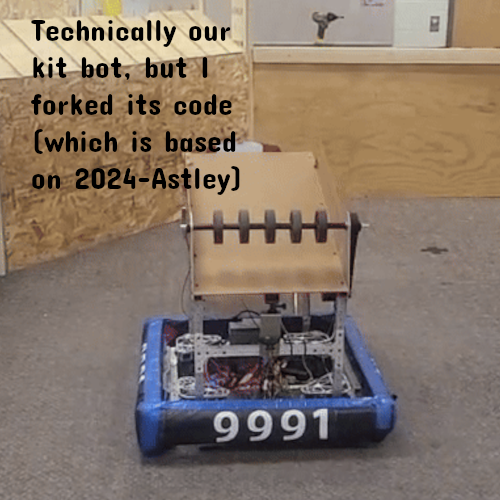
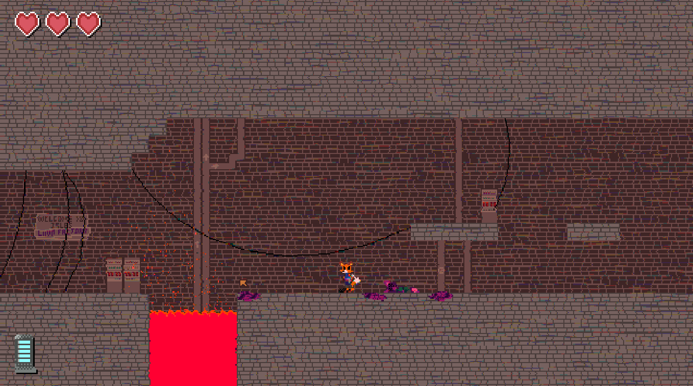
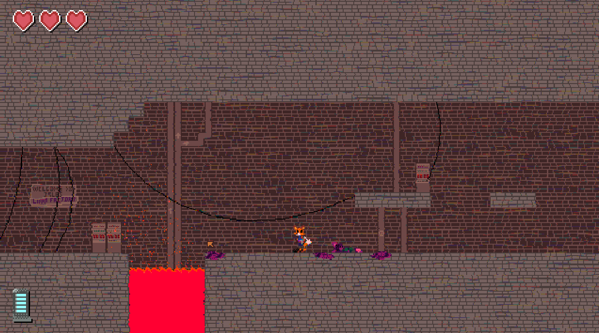

Hey there, I'm Noah Sapelak! Currently I attend Holly High School/Oakland Schools Technical Campus Northwest, all while entering my senior year! I spend my time at school taking AP classes, and helping out the schools robotics team, Hollywood Robotics (7211)! When I'm not doing that, I like to play on my computer and work on projects!
SKILLS/EXPERIENCES
I have plenty of experience in several tools!
- -6 years using GameMaker: Studio 2
- -Using Java to program FRC Robots (7211)
- -Programming in Python and C++ to program with microcontrollers (RPI, Arduino, etc)
- -Using Blender, OnShape, and Solidworks to craft 3D models
- -Setup and maintain 3D printers (Bambu, Anycubic, etc.)
- -Edit videos in Davinci Resolve
- -Programmed this website in HTML, CSS, and JS!
- -Got vision working on FRC Robot
AWARDS
I have plenty of experience in several tools!
- -2024 First Robotics Deans List Nominee
- -2024 Michigan Tech Leading Scholar Finalist
- -FRC 7211 2022 Rookie Award, 2023 Gracious Professionalism Award, some 2024 award (I forgor)
- -OSTC ERM Rising Star Award
CONTACT ME AT NOAH@FENNECS.DEV
(Alternatively, you could use PGtheVRguyGAMES@gmail.com)

ACTION FOX
Action Fox is a game that I am currently developing for Windows/Linux on GameMaker. The player has a dynamic movement system with multiple states, transitions between world maps and levels dynamically, camera that auto adjusts based on situations, dynamic enemy AI, and more! There currently is a demo build available on itch.io

TROF3R
2023-2024
A clone of Five Nights at Freddys in GameMaker, the project utilized a 1:1 replica of the originals AI, camera system, and more. Additionally, this is the first project I made and released directly for mobile. The project can be downloaded for free on the Google Playstore, and many of its functions are intentionally designed with modularity to then be used in future projects.

7211 2024-Astley
2024
The codebase for the 7211 FRC Robot. Utilizing CTRE Swerve Drive, two PID loops for both arm and wrist mechanisms for the shooter, and the autonomous mode being guided with PathPlanner. This is the second most advanced robot I've programmed (also I got to be operator which was cool)!

7211 2025-Trident
2025
The codebase for the 7211 FRC Robot in 2025. Utilizing much learned from 2024-Astley (CTRE Swerve, PID loops, and more). This robot is not done yet, but we've got a vision prototype done that we hope to use for autonomous path correction and auto driving in tele-op.


 
